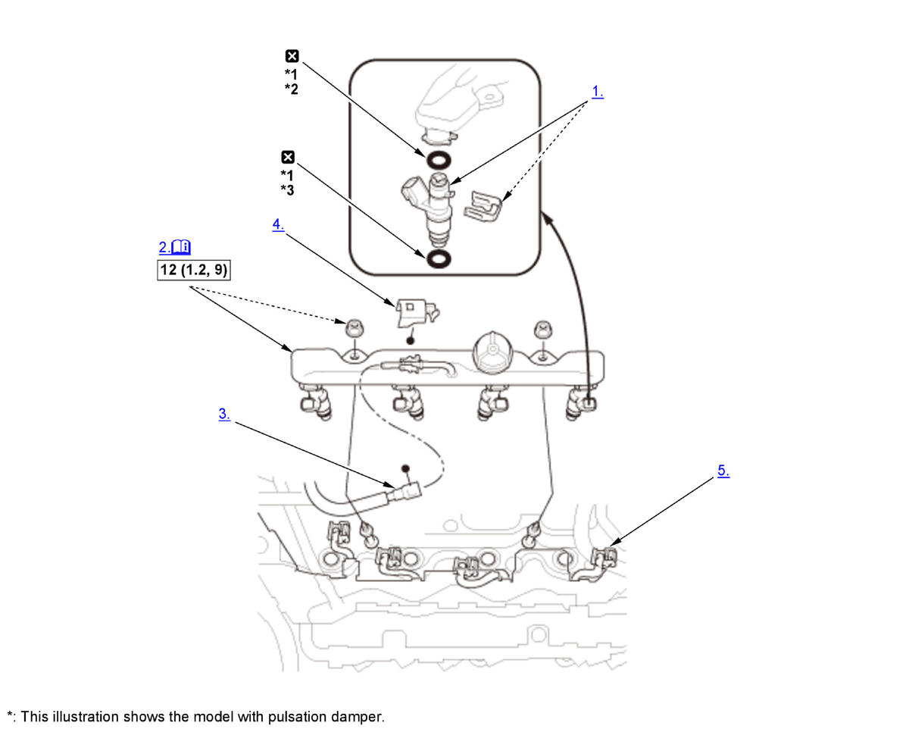

Injector Removal and Installation (K20C2): Installation: Procedure
NOTE:
Numbered call-outs in figure pertain to list numbers in following procedure.

Courtesy of HONDA, U.S.A., INC. |
Detailed information, notes and precautions |
 |
Torque: N.m (kgf.m, lbf.ft) |
 |
Replace |
| *1 | Coat the clean engine oil |
| *2 | O-rings (black) |
| *3 | O-rings (brown) |
- Injector - Install
- Fuel Rail and Injector - Install
NOTE: Carefully install the fuel rail and the injectors to the cylinder head.
- Quick-Connector Fitting - Connect
- Quick-Connector Fitting Cover - Install
- Connector (Injector) - Connect
- Fuel Leak - Check
1. Turn the vehicle to the ON mode, but do not start the engine. After the fuel pump runs for about 2 seconds, the fuel line will be pressurized. Repeat this two or three times, then check for fuel leakage.